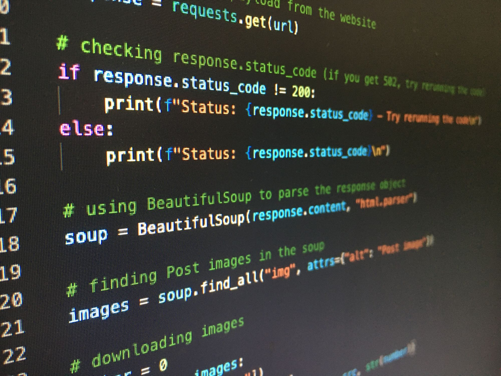
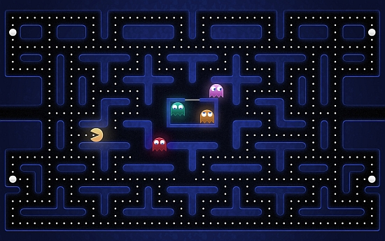

Petrovai Asztrik Örs
Célom:
A célom, hogy munkát találjak a programozás területén
Mit tanultam eddig:
Egy kis programozási nyelvet a Számalk Szalézi Technikumban
Gazdasági informatikát a Zsámbéki Premontrei Szakgimnáziumában és Technikumában
Középszintű komplex angol nyelvvizsga
- Python
- Java
- HTML
Hobbi:
Szeretek vidrójátékokkal játszani, illetve warhammer 40k lore-t olvasni/hallgatni

